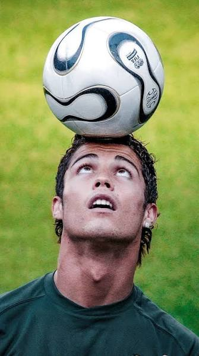
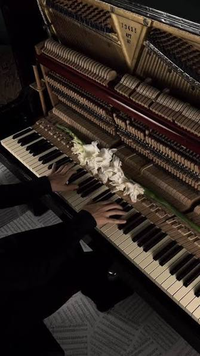
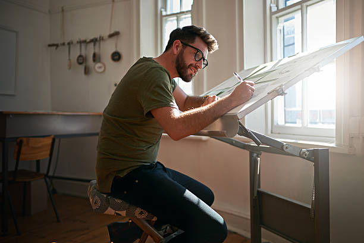
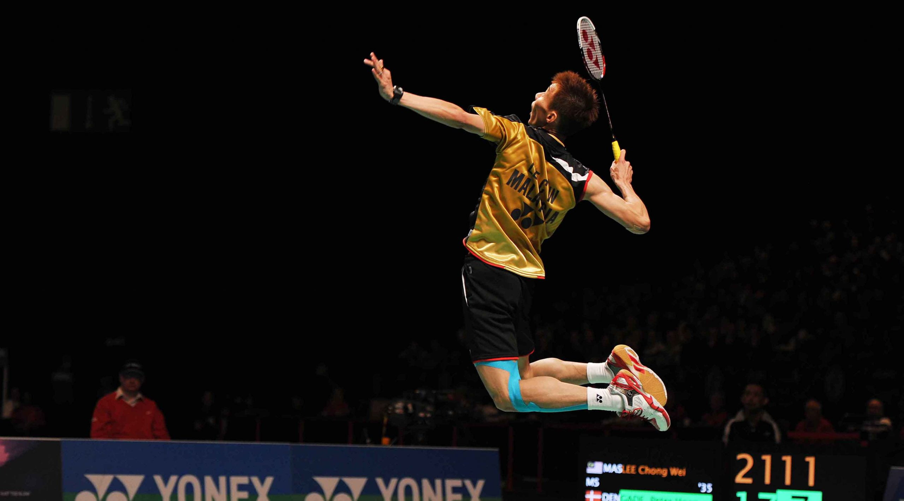
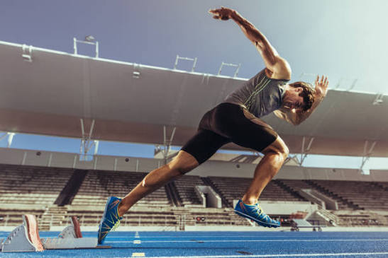
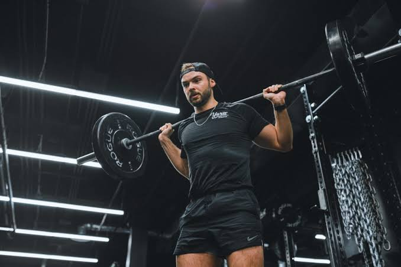

SPORTS
Football
My biggest passion. I enjoy playing, improving my game and constantly challenging myself on the pitch.
BEYOND WORK & ACADEMICS
From the football pitch to the gym, from creating art to learning music — these are the interests that keep me curious, active and constantly learning.

My biggest passion. I enjoy playing, improving my game and constantly challenging myself on the pitch.

Exploring music and learning to play the piano, one practice session at a time.

I enjoy sketching and creating artwork, especially character illustrations and anime-inspired art.

A sport I have enjoyed for years. I like its pace, competition and the quick reactions it demands.

Working on acceleration, speed and explosiveness to become a better athlete.

Building strength, improving my physique and pushing my physical limits through training.
LET'S CONNECT
I'm always open to conversations, collaborations and new opportunities.
Contact Me →